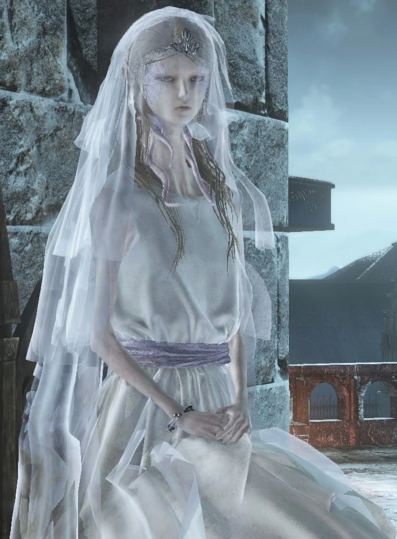

← Volver
← Volver
La Capitán de Compañía Yorshka es un NPC de Dark Souls III y la líder del Aquelarre Espadas de la Luna Oscura.
¿Dónde se puede encontrar a Ludleth de Courland en Dark Souls III? Se puede encontrar a Yorshka en Anor Londo. Desde la hoguera de Anor Londo o acercándote desde la Tumba de la Luna oscura, hay que caminar hasta la escalera en espiral. Cuando la palanca está en la posición "abajo", ir hacia la cima de la escalera y mirar hacia Anor Londo. Luego, caminar derecho por la abertura del barandal de la izquierda. Con la palanca en la posición "arriba", tomar las escaleras en espiral hasta abajo y caminar por la única plataforma abierta. Viajá derecho por el puente invisible hasta que estés alineado con la torre que se encuentra a tu derecha y luego dejate caer. Podés usar Piedra Prisma si no estás seguro de hasta donde se extiende el puente invisible.
| Souls | NG | NG+ | NG++ | NG+3 | NG+4 | NG+5 | NG+6 | NG+7 | NG+8 | NG+9 |
|---|---|---|---|---|---|---|---|---|---|---|
| Cantidad | 3000 | 6000 | ?? | ?? | ?? | ?? | ?? | ?? | ?? | ?? |
Además de las almas, la Capitán de Compañía Yorshka dropeará la Campana de Yorshka y las Espadas de la Luna Oscura.
Diálogo del primer encuentro
"Nómbrate tú mismo, extraño. Soy Yorshka, Capitán de los Caballeros de la Luna Negra. ¿Qué fue lo que te atrajo a tal lugar?"
Al seleccionar "realizar la Lealtad de la Luna Oscura"
"¿Crees que...? Muy bien. Capitán de esta compañía sin caballeros, sigo siendo. Te concederé un propósito. Has viajado lejos; escucha mi voz. Si juras por el Pacto que te convertirás en Una sombra del padre Gwyn y la hermana Gwynevere, Una espada que cazará a los enemigos de nuestros señores; Entonces te pongo bajo la égida, y el poder de la Luna Oscura. Ahora eres una Espada de la Luna Oscura. El único caballero de nuestra compañía. "Jura este juramento y afronta tu solemne deber."
Al arrodillarte ante Yorshka
"Oh, buena Espada de la Luna Oscura, bienvenido a casa. Si puedo brindarte ayuda, sólo dime cómo."
Al seleccionar "hablar"
"Hace mucho tiempo, nuestro padre Gwyn, lamentando la extinción del fuego, se convirtió en cenizas de su propia voluntad. Ahora, el fuego está vinculado, por los campeones que vinieron en su lugar. Tal es la voluntad del padre y de los dioses. Y así los caballeros de la Luna Negra tomaron las armas, para velar por los que unen el fuego. Pero hace mucho tiempo, nuestra compañía perdió a su último caballero. Sólo su pacto se conservó hasta el día de hoy, hasta el momento de tu visita. Heridom, de hecho, adopta muchas formas"
Al seleccionar "hablar" nuevamente (sólo una vez por ciclo de juego)
"¿Puedo hacerte una pregunta? Esta torre, esta prisión, se yergue alta y solitaria, El artilugio que une sus tramos inferiores permaneció inmóvil durante mucho tiempo. Entonces... ¿por qué camino ascendiste hasta aquí? ¿Eres una criatura del aire o algún otro ser alado?"
Al seleccionar "sí, puedo volar"
"¡Dios mío! Ya me lo imaginaba. Entonces eres un dragón, ¿o tal vez un cuervo? Bueno, seas lo que seas, eres maravillosamente extraño, "Pero extrañamente familiar, visitante". *Ríe*."
Al seleccionar "no, no puedo volar"
"No, supongo que no. Por supuesto que no. No pienses más en mi pregunta. Me avergüenza decirlo, pero no sé mucho de nada..."
Al alcanzar el Rango 1 del aquelarre
"Mi Espada de la Luna Oscura, tus acciones merecen gran adoración. Como capitán, es mi deber honrar a los caballeros de grandes logros. Por favor, es tuyo y no te lo doy a la ligera. Como una sombra del padre Gwyn y la hermana Gwynevere, Persevera en tu deber caballeresco, cazando a los potenciales enemigos de los dioses."
Al alcanzar el Rango 2 del aquelarre
"Mi Espada de la Luna Oscura, tus acciones merecen gran adoración. Como capitán, es mi deber honrar a los caballeros de grandes logros. Esta es una maravilla de la Luna Negra, heredado de mi hermano para este mismo propósito. Por favor, toma esto. Te lo mereces. Como una sombra del padre Gwyn y la hermana Gwynevere, Persevera en tu deber caballeresco, "cazando a los potenciales enemigos de los dioses."
Al seleccionar "hablar" después de alcanzar el Rango 2 del aquelarre
"Los Caballeros de la Luna Oscura una vez fueron liderados por mi hermano mayor, El Sol Oscuro Gwyndolin. Pero él estaba enfermo, y el liderazgo de los caballeros recayó en mí. Entonces Sulyvahn se autoproclamó Pontífice injustamente, y me tomó prisionera. Oh, ¿dónde podrá estar mi querido hermano? Si tan solo estuviera aquí, Sería un gran placer para mí que ambos se conocieran. Como, sin duda, él haría."

 ↑
↑